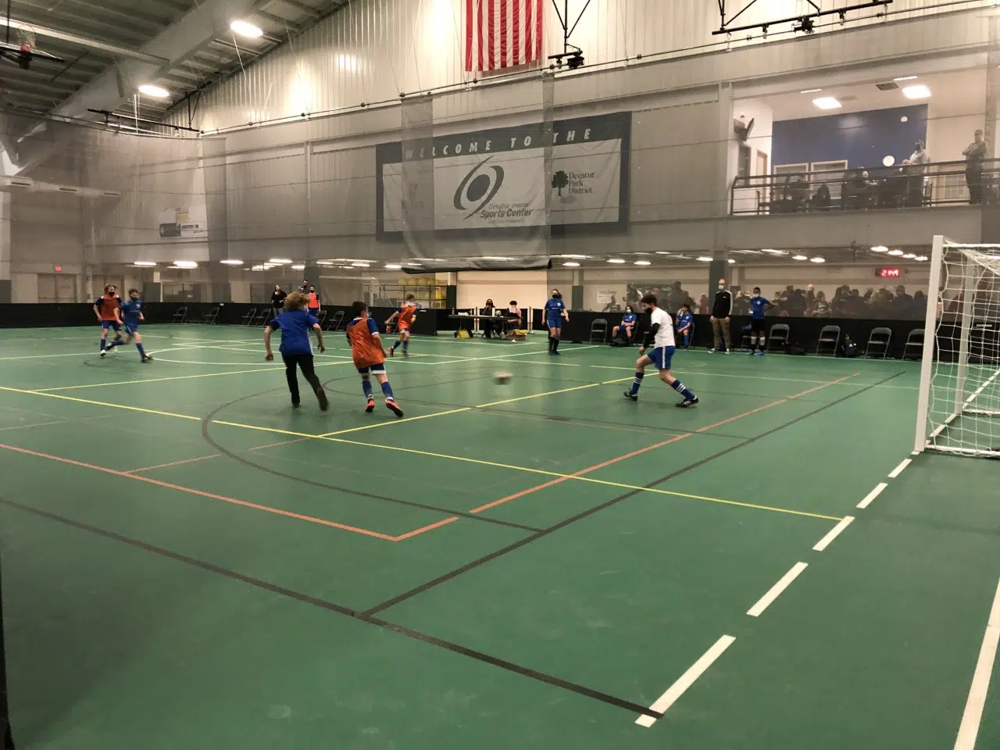

Winter sports are extremely unique, as they are played inside. There are several programs offered through the Decatur Park District, including hockey, basketball, volleyball, and even indoor soccer. The Decatur Park District hosts many of these events at the Decatur Indoor Sports Center, which boasts an indoor track, two gyms, four basketball and volleyball courts, a weight room, and a rock wall. Play-it-Again-Sports is the place to go for affordable equipment!!
There are several different ways to get involved at the DISC. There are many Special Events hosted at the DISC, including youth basketball, pickleball, and rock wall climbing opportunities! Indoor soccer is one of the main highlights that the DISC offers, as many tournaments are hosted throughout the winter to keep athletes active!
